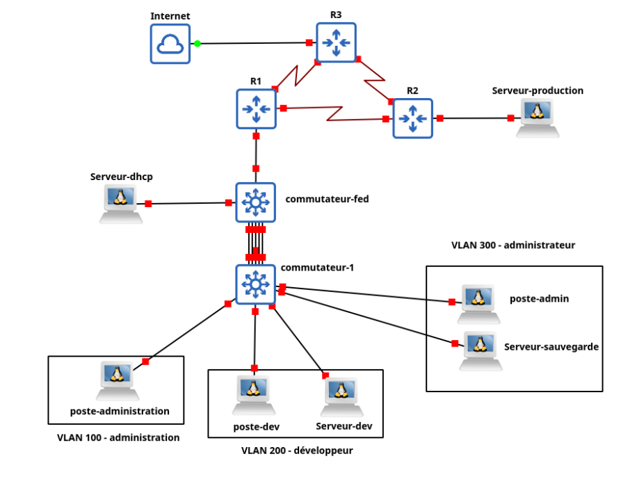
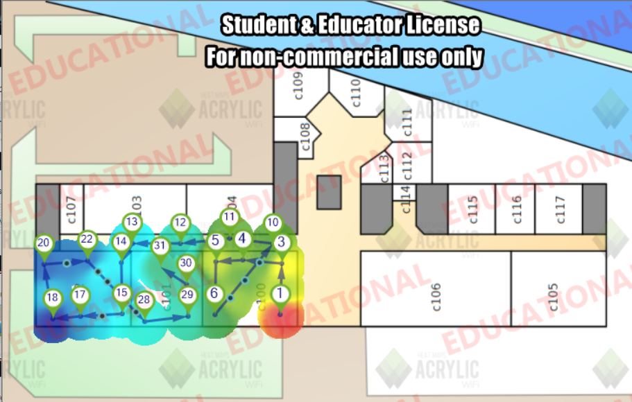
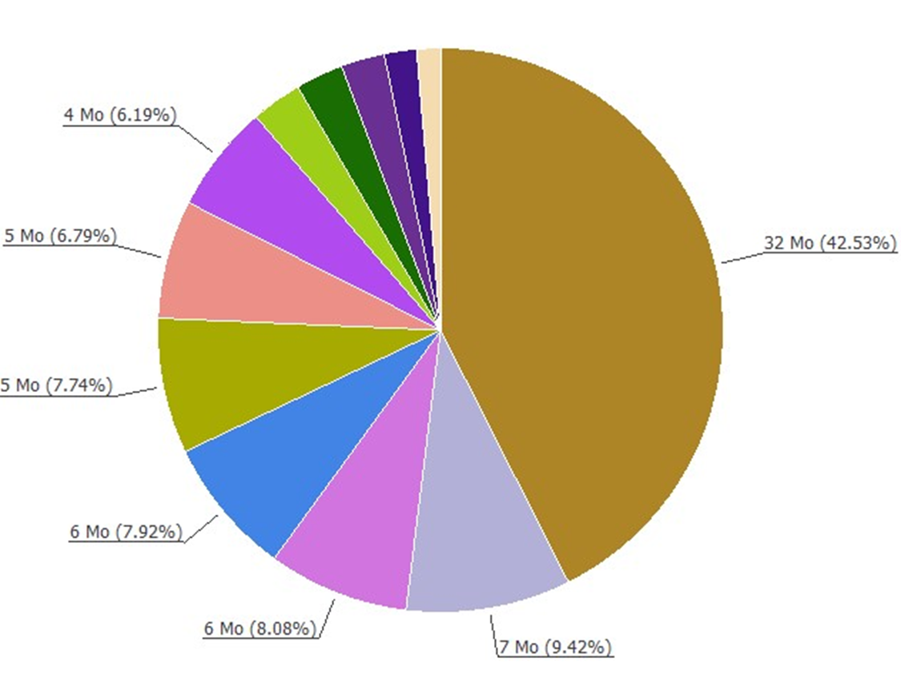
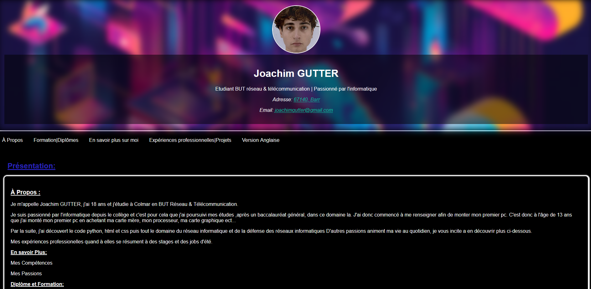
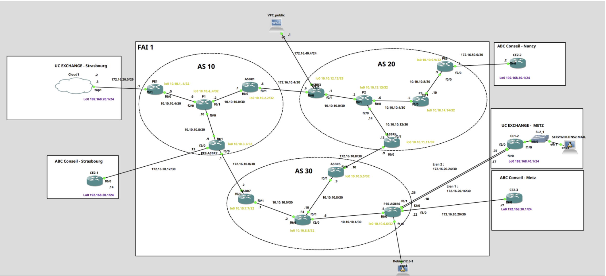
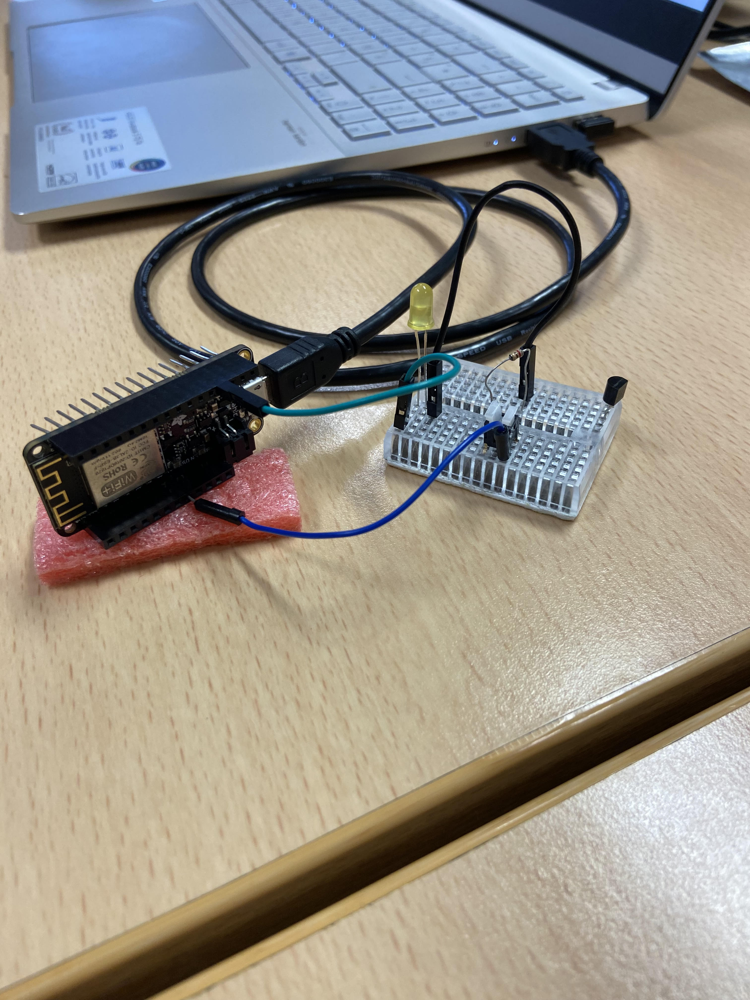
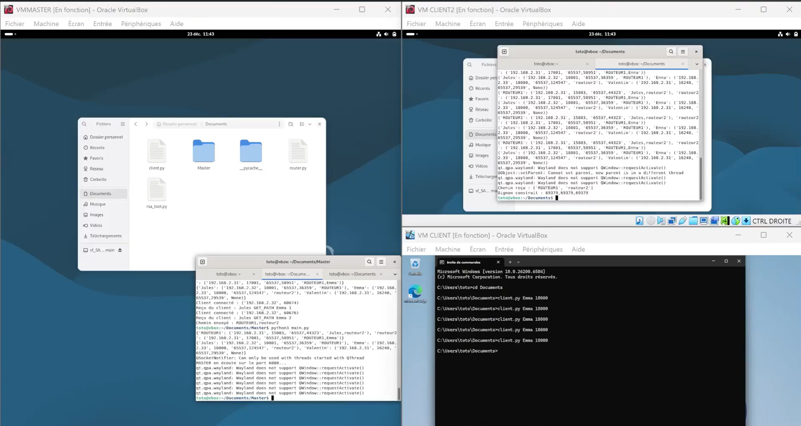
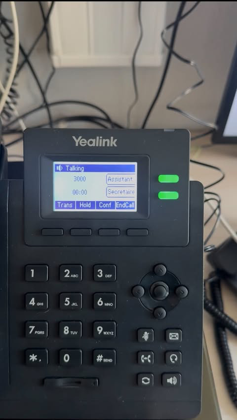

Etudiant BUT réseau & télécommunication | Passionné par l'informatique
Adresse: 67140, Barr
Email: joachimgutter@gmail.com

Construction d'un réseau informatique avec différents services vus tout au long de l'année. Mise en place d'un service DHCP et des différents serveurs (production, dev, sauvegarde). Construction des VLAN, mise en place Spanning-tree, ACL, NAT et routage inter-VLAN.
Compétences mobilisées : Segmentation réseau (VLAN), routage inter-VLAN, sécurisation des ports (ACL), gestion des services (FTP, web, synchronisation).

Projet sur la découverte et l'analyse des signaux WiFi 2,4 et 5 GHz. Utilisation du logiciel Acrylic, câblage d'un AP via baie informatique et fabrication des câbles RJ-45.
Compétences mobilisées : Analyse réseau, heatmaps, optimisation du placement des AP, simulation Packet Tracer, sécurité PoE.

Outil de reporting réalisé sous forme de scripts Python et PowerShell : analyse et tri de fichiers avec affichage graphique en camembert pour supprimer des fichiers d'un répertoire donné.

Créer un CV interactif sous forme de site web multipage, mettant en valeur compétences, formations et expériences professionnelles.

Conception d'un réseau de Fournisseur d'Accès à Internet. Mise en place de protocoles de routage et d'interconnexion de sites tels que BGP et MPLS. Installation de services réseau permettant de simuler l'infrastructure informatique d'entreprises disposant de plusieurs sites.
Compétences mobilisées : Routage dynamique (OSPF, BGP), MPLS, interconnexion de sites distants, virtualisation de services réseau, administration d'infrastructures multi-sites.

Projet consistant à la création d'une prise intelligente pilotable via le WiFi. Elle permet d'allumer ou d'éteindre un appareil électrique depuis un smartphone ou une interface web. Ce projet a été réalisé grâce à une carte ESP, une LED représentant l'état de la prise (allumée ou éteinte), une résistance, une breadboard et un ordinateur.
Compétences mobilisées : Développement embarqué, programmation ESP32/ESP8266, communication WiFi, conception d'interfaces web, intégration matériel/logiciel.

Ce projet consiste à concevoir un système de communication anonyme basé sur un ensemble de routeurs virtuels. Chaque message envoyé par un client traverse plusieurs routeurs sélectionnés aléatoirement avant d’atteindre sa destination, afin d’assurer un anonymat similaire au réseau TOR.
Compétences mobilisées : Programmation réseau, architecture client-serveur, chiffrement des communications, gestion des sockets, conception d'applications distribuées.

Projet consistant à la mise en place de services de téléphonie reproduisant le fonctionnement d'un cabinet médical. Installation et configuration de deux téléphones d'entreprise et d'un téléphone logiciel simulant un assistant, un secrétaire et un médecin. Configuration d'un server IPBX et de toutes les fonctions téléphoniques utiles en entreprise.
Compétences mobilisées : Administration d'IPBX, configuration SIP, gestion de la ToIP, déploiement de postes téléphoniques, paramétrage des services de communication.
Acquisition des compétences à travers mon apprentissage en entreprise et à travers différents projets effectués avec mon maître d'apprentissage.
{kind=link}
{kind=link}
{kind=link}
{kind=link}
{kind=link}
{kind=link}
{kind=link}
{kind=link}
{kind=link}